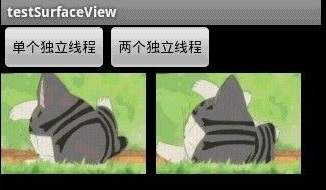

SurfaceView双缓冲应用
双缓冲是为了防止动画闪烁而实现的一种多线程应用，基于SurfaceView的双缓冲实现很简单，开一条线程并在其中绘图即可。本文介绍基于SurfaceView的双缓冲实现，以及介绍类似的更高效的实现方法。
本文程序运行截图如下，左边是开单个线程读取并绘图，右边是开两个线程，一个专门读取图片，一个专门绘图：对比一下，右边动画的帧速明显比左边的快，左右两者都没使用Thread.sleep()。为什么要开两个线程一个读一个画，而不去开两个线程像左边那样都“边读边画”呢？因为SurfaceView每次绘图都会锁定Canvas,也就是说同一片区域这次没画完下次就不能画，因此要提高双缓冲的效率，就得开一条线程专门画图，开另外一条线程做预处理的工作。

main.xml：
<?xml version="1.0" encoding="utf-8"?><LinearLayout xmlns:android="http://schemas.android.com/apk/res/android
android:layout_width="fill_parent
android:layout_height="fill_parent
android:rientation="vertical" >
<LinearLayout
android:id="@+id/LinearLayout01
android:layout_width="wrap_content
android:layout_height="wrap_content" >
<Button
android:id="@+id/Button01
android:layout_width="wrap_content
android:layout_height="wrap_content
android:text="单个独立线程" >
</Button>
<Button
android:id="@+id/Button02
android:layout_width="wrap_content
android:layout_height="wrap_content
android:text="两个独立线程" >
</Button>
</LinearLayout>
<SurfaceView
android:id="@+id/SurfaceView01
android:layout_width="fill_parent
android:layout_height="fill_parent" >
</SurfaceView>
</LinearLayout>
TestSurfaceView.java：
import java.lang.reflect.Field;import java.util.ArrayList;
import android.app.Activity;
import android.graphics.Bitmap;
import android.graphics.BitmapFactory;
import android.graphics.Canvas;
import android.graphics.Paint;
import android.graphics.Rect;
import android.os.Bundle;
import android.util.Log;
import android.view.SurfaceHolder;
import android.view.SurfaceView;
import android.view.View;
import android.widget.Button;
public class TestSurfaceView extends Activity {
Button btnSingleThread, btnDoubleThread;
SurfaceView sfv;
SurfaceHolder sfh;
ArrayList<Integer> imgList = new ArrayList<Integer>();
int imgWidth, imgHeight;
Bitmap bitmap;// 独立线程读取，独立线程绘图
@Override
public void onCreate(Bundle savedInstanceState) {
super.onCreate(savedInstanceState);
setContentView(R.layout.main);
btnSingleThread = (Button) this.findViewById(R.id.Button01);
btnDoubleThread = (Button) this.findViewById(R.id.Button02);
btnSingleThread.setOnClickListener(new ClickEvent());
btnDoubleThread.setOnClickListener(new ClickEvent());
sfv = (SurfaceView) this.findViewById(R.id.SurfaceView01);
sfh = sfv.getHolder();
sfh.addCallback(new MyCallBack());// 自动运行surfaceCreated以及surfaceChanged
}
class ClickEvent implements View.OnClickListener {
@Override
public void onClick(View v) {
if (v == btnSingleThread) {
new Load_DrawImage(0, 0).start();// 开一条线程读取并绘图
} else if (v == btnDoubleThread) {
new LoadImage().start();// 开一条线程读取
new DrawImage(imgWidth + 10, 0).start();// 开一条线程绘图
}
}
}
class MyCallBack implements SurfaceHolder.Callback {
@Override
public void surfaceChanged(SurfaceHolder holder, int format, int width,
int height) {
Log.i("Surface:", "Change");
}
@Override
public void surfaceCreated(SurfaceHolder holder) {
Log.i("Surface:", "Create");
// 用反射机制来获取资源中的图片ID和尺寸
Field[] fields = R.drawable.class.getDeclaredFields();
for (Field field : fields) {
if (!"icon".equals(field.getName()))// 除了icon之外的图片
{
int index = 0;
try {
index = field.getInt(R.drawable.class);
} catch (IllegalArgumentException e) {
e.printStackTrace();
} catch (IllegalAccessException e) {
e.printStackTrace();
}
// 保存图片ID
imgList.add(index);
}
}
// 取得图像大小
Bitmap bmImg = BitmapFactory.decodeResource(getResources(),
imgList.get(0));
imgWidth = bmImg.getWidth();
imgHeight = bmImg.getHeight();
}
@Override
public void surfaceDestroyed(SurfaceHolder holder) {
Log.i("Surface:", "Destroy");
}
}
/**
* 读取并显示图片的线程
*/
class Load_DrawImage extends Thread {
int x, y;
int imgIndex = 0;
public Load_DrawImage(int x, int y) {
this.x = x;
this.y = y;
}
public void run() {
while (true) {
Canvas c = sfh.lockCanvas(new Rect(this.x, this.y, this.x
+ imgWidth, this.y + imgHeight));
Bitmap bmImg = BitmapFactory.decodeResource(getResources(),
imgList.get(imgIndex));
c.drawBitmap(bmImg, this.x, this.y, new Paint());
imgIndex++;
if (imgIndex == imgList.size())
imgIndex = 0;
sfh.unlockCanvasAndPost(c);// 更新屏幕显示内容
}
}
};
/**
* 只负责绘图的线程
*/
class DrawImage extends Thread {
int x, y;
public DrawImage(int x, int y) {
this.x = x;
this.y = y;
}
public void run() {
while (true) {
if (bitmap != null) {// 如果图像有效
Canvas c = sfh.lockCanvas(new Rect(this.x, this.y, this.x
+ imgWidth, this.y + imgHeight));
c.drawBitmap(bitmap, this.x, this.y, new Paint());
sfh.unlockCanvasAndPost(c);// 更新屏幕显示内容
}
}
}
};
/**
* 只负责读取图片的线程
*/
class LoadImage extends Thread {
int imgIndex = 0;
public void run() {
while (true) {
bitmap = BitmapFactory.decodeResource(getResources(),
imgList.get(imgIndex));
imgIndex++;
if (imgIndex == imgList.size())// 如果到尽头则重新读取
imgIndex = 0;
}
}
};
}